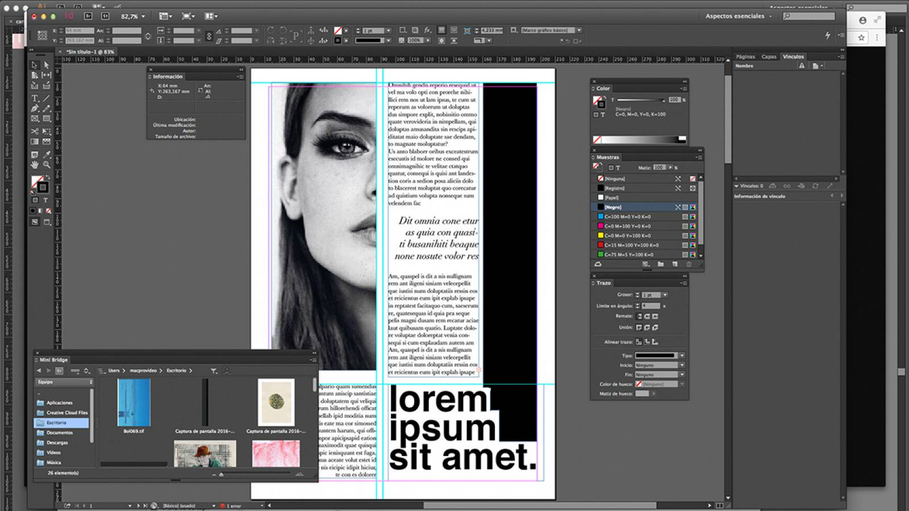
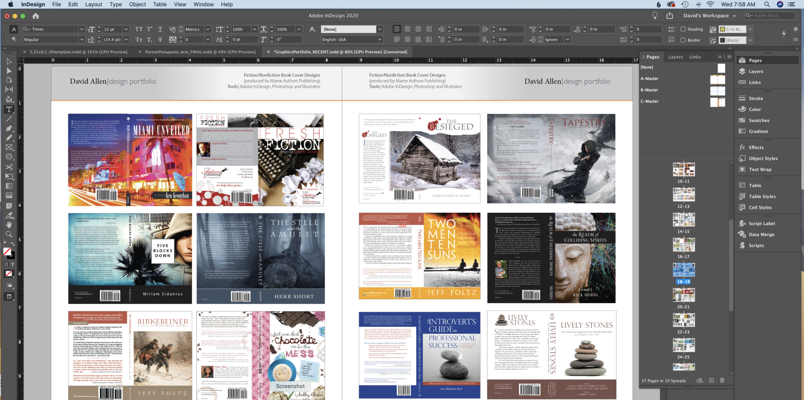
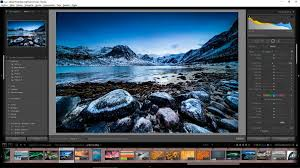
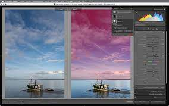
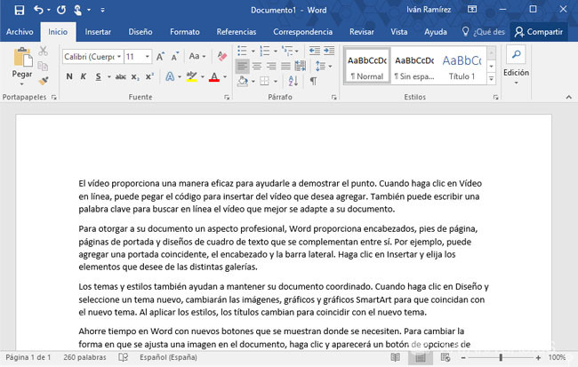
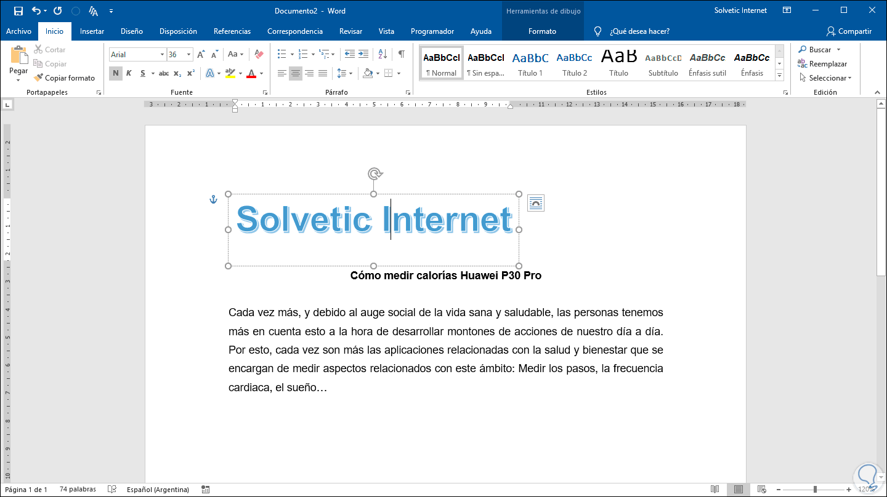
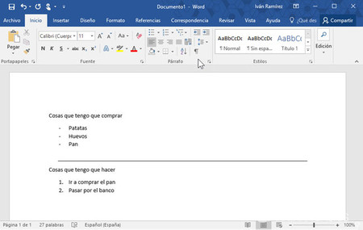

|
 |
| ADOBE ILLUSTRATOR |
| Adobe Illustrator es un software de diseño gráfico basado en vectores, ampliamente utilizado para la creación de ilustraciones, logotipos, iconos y gráficos escalables sin perder calidad. Su versatilidad y herramientas avanzadas lo hacen ideal para diseñadores, ilustradores y artistas digitales. Además, permite una integración fluida con otras aplicaciones de Adobe, como Photoshop e InDesign. |
| ADOBE DREAMWEAVER |
 |
Adobe Dreamweaver es un software de diseño y desarrollo web que permite crear, editar y gestionar sitios web y aplicaciones. Combina una interfaz visual intuitiva con la posibilidad de escribir código en HTML, CSS, JavaScript y otros lenguajes. Es ideal tanto para principiantes como para desarrolladores avanzados, ya que ofrece herramientas de diseño en tiempo real y compatibilidad con diversas tecnologías web. |
| ADOBE PREMIERE PRO |
| Adobe Premiere Pro es un software de edición de video profesional utilizado para la postproducción de contenido audiovisual. Ofrece una amplia gama de herramientas para cortar, editar, aplicar efectos, corregir color y mezclar audio. Es altamente utilizado en la industria del cine, la televisión y la creación de contenido digital, gracias a su integración con otros programas de Adobe, como After Effects y Photoshop, lo que permite un flujo de trabajo eficiente y creativo. |
 |
 |
 |
| ADOBE PHOTOSHOP |
 |
Adobe Photoshop es un software de edición y retoque de imágenes líder en la industria. Permite manipular fotografías, crear composiciones digitales, diseñar gráficos y trabajar con ilustraciones. Ofrece herramientas avanzadas como capas, máscaras, filtros y ajustes de color, lo que lo hace ideal para fotógrafos, diseñadores y artistas digitales. Además, su integración con otras aplicaciones de Adobe facilita un flujo de trabajo más eficiente y creativo. |
| ADOBE INDESIGN |
 |
Adobe InDesign es un software de diseño y maquetación profesional utilizado para crear revistas, libros, folletos, carteles y otros materiales impresos o digitales. Destaca por sus herramientas avanzadas de composición tipográfica, organización de páginas y compatibilidad con gráficos de Illustrator y Photoshop. Es ampliamente utilizado en el sector editorial y publicitario, permitiendo crear diseños estructurados y visualmente atractivos con gran precisión. |
|  |  |
| AUTO CAD |
 |
AutoCAD es un software de diseño asistido por computadora (CAD) utilizado para la creación de planos, modelos 2D y 3D en arquitectura, ingeniería y diseño industrial. Es ampliamente empleado por profesionales para desarrollar dibujos técnicos con gran precisión y eficiencia. Ofrece herramientas avanzadas para modelado, anotaciones y personalización mediante scripts y automatización, facilitando el diseño y la documentación de proyectos complejos. |
 |
 |
 |
| LIGHTROOM |
 |
Lightroom es una de las herramientas más potentes para la edición y gestión de fotografías. Desarrollado por Adobe, está diseñado especialmente para fotógrafos que buscan ajustar colores, iluminación y detalles de sus imágenes de manera profesional sin perder calidad. Su interfaz intuitiva permite aplicar ediciones rápidas con ajustes preestablecidos o trabajar de manera detallada con controles avanzados. Además, su sincronización en la nube facilita el acceso a las fotos desde cualquier dispositivo. |
|  |  |
| MICROSOFT WORD |
 |
Microsoft Word es un procesador de texto ampliamente utilizado que forma parte del paquete de aplicaciones de Microsoft Office. Con una interfaz intuitiva y diversas herramientas de edición, formato y diseño, Word permite crear desde documentos sencillos hasta informes complejos. Además, ofrece funciones como el corrector ortográfico y gramatical, plantillas prediseñadas, y la capacidad de insertar imágenes, tablas y gráficos. Es una de las herramientas más populares en entornos tanto profesionales como educativos debido a su versatilidad y facilidad de uso. |
|  |  |  |
|